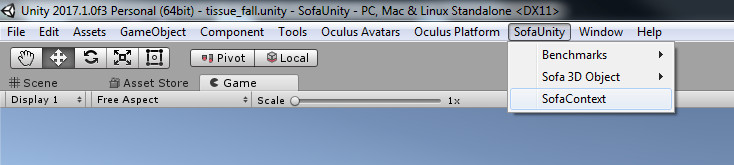
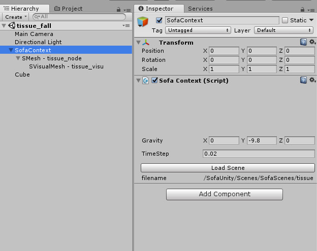
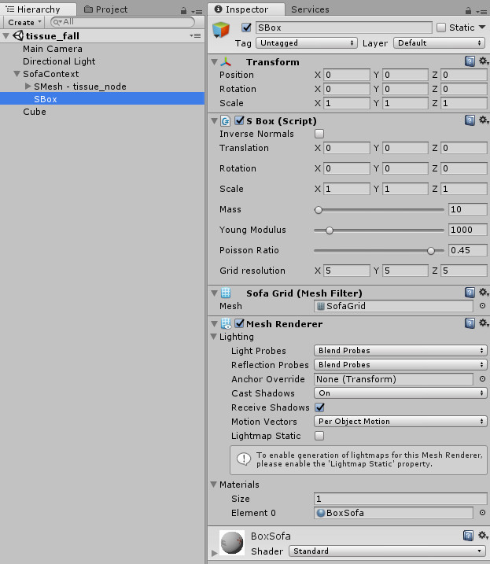

Object Creation in Unity3D
SofaContext creation
The first approach to use Sofa physical engine inside Unity is to create basic shape from the editor.
First thing to do is always to create the object: SofaContext. This Unity GameObject represent the Sofa simulation root object.All other object to be simulated in Sofa will be child of this Root object.

The inspector of the SofaContext gameObject allows to change the gravity in the scene as well as the simulation timestep.
It allows also to load Sofa simulation scene. This options is explained in the next section.
Very important, the transform parameters from unity GameObject should not be changed.

Sofa Objects creation
From that step, it is now possible to create several types of geometry directly as GameObject in Unity3D using the interface. Here is the list:
|
3D Sphere, available in Rigid or Deformable mode. 3D Box, available in Rigid or Deformable mode. 3D Cylinder, available in Rigid or Deformable mode. 2D Plane, available only in Rigid mode. |
Rigid mode means the object will be simulated in the scene and will collide but won’t move or deform.
Whereas the deformable objects will collide and are modelized using Tetrahedral Finite Element Method. It is thus possible to set their mass, resolution and FEM parameters.
They can be placed and transformed in 3D using internal parameters and not the unity Transform values. See the inspector below:

Example
In this approach, only basic collision detection using primitive to primitive intersection is used.Example of SBox falling on a SRigidPlane
Youtube demo movie: Sofa in Unity - 3D Physical Objects Simulation